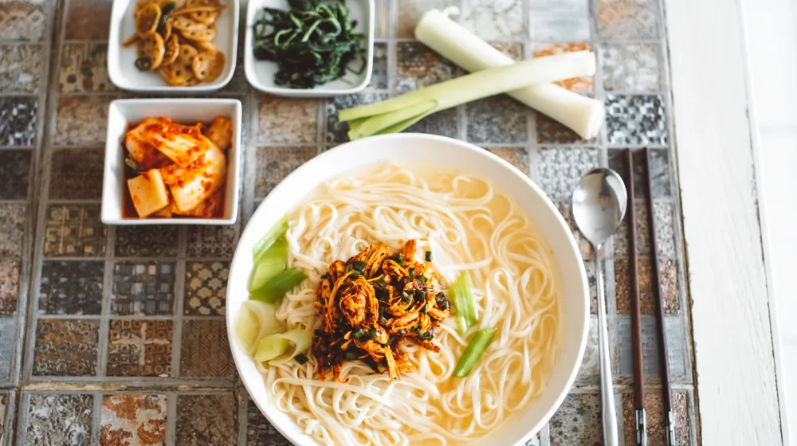

종부 내림음식, 뭐가 다를까? 역사와 맛 비교 가이드
사진: Tuğba / Pexels (무료 이미지, 출처 표기)
종부 내림음식이란 무엇인가?

종부 내림음식은 조선시대부터 대를 이어온 명문가의 며느리, 즉 종부(宗婦)가 전수하는 전통 음식을 의미합니다. 단순한 요리를 넘어, 가문의 역사와 철학, 지역의 특색, 그리고 접빈객(接賓客) 문화가 담겨 있는 소중한 유산입니다. 각 종가의 내림음식은 지역 특산물을 활용하고, 오랜 세월 다듬어진 조리법과 가풍에 따라 고유한 맛과 형태를 지닙니다.
이는 조상에 대한 정성과 손님을 대접하는 마음이 깃들어 있으며, 일반적인 식탁에서는 맛보기 어려운 귀한 음식으로 여겨집니다. 한국문화재재단에 따르면, 종부 내림음식은 유네스코 인류무형문화유산으로 지정된 '김치'처럼, 한국 식문화의 정수이자 살아있는 역사로 평가받고 있습니다.
주요 종가별 내림음식 특징 비교
한국에는 수많은 종가가 존재하며, 각 가문마다 독특한 내림음식을 자랑합니다. 대표적인 종가들을 예시로 들어, 그들의 내림음식이 어떤 특징을 가지고 있는지 비교해보겠습니다. 이는 일반적인 경향이며, 특정 종가의 모든 내림음식을 대표하지는 않습니다.
위 표에서 보듯이, 각 종가의 내림음식은 그 가문의 사회적 역할과 지역적 특색, 그리고 주요 식재료에 따라 확연히 다른 모습을 보입니다. 특히 장류와 김치, 술 등 저장 음식과 발효 식품은 종가마다 비법이 달라 내림음식의 핵심적인 맛을 좌우합니다.
내림음식, 직접 경험하는 방법
종부 내림음식의 진정한 가치는 직접 맛보고 그 문화를 이해하는 데 있습니다. 2026년 9월 기준으로 다음과 같은 방법들을 통해 종가음식을 경험할 수 있습니다.
- 종가 체험 프로그램: 일부 종가에서는 숙박과 함께 내림음식 시연 및 식사 체험 프로그램을 운영합니다. 한국문화재재단이나 각 지자체 관광정보센터에서 관련 정보를 확인할 수 있습니다.
- 전통 음식 전문점: 종부 내림음식을 계승하거나 현대적으로 재해석하여 선보이는 한정식당들이 있습니다. 방문 전 메뉴와 종가의 연관성을 확인하는 것이 좋습니다.
- 온라인 스토어 및 밀키트: 간편하게 집에서 종가음식을 즐기고 싶다면, 일부 종가나 전문 업체에서 내림음식을 밀키트나 완제품 형태로 판매하기도 합니다.
정확한 운영 여부 및 예약 방법은 방문하고자 하는 종가나 관련 기관의 공식 홈페이지에서 다시 확인하시길 권장합니다.
내림음식의 현대적 계승과 가치
오늘날 종부 내림음식은 단순한 전통 계승을 넘어 다양한 방식으로 그 가치를 확장하고 있습니다. 젊은 세대에게 전통 식문화를 알리는 교육적 도구로 활용되거나, 지역 특산물 소비를 촉진하여 지역 경제 활성화에 기여하기도 합니다.
또한, 건강을 중시하는 현대인의 식습관에 맞춰 자연 식재료와 전통 조리법을 활용한 내림음식이 슬로푸드(Slow Food)의 가치를 재조명받고 있습니다. 전통과 현대의 조화를 통해 새로운 미식 경험을 제공하며, 한국 고유의 문화적 정체성을 지켜나가는 중요한 매개체가 되고 있습니다.
내림음식 즐기기 전, 이것만은 알아두세요
종부 내림음식을 제대로 즐기기 위해서는 몇 가지 유의할 점이 있습니다.
- 사전 정보 확인: 종가 체험이나 전문점 방문 시, 반드시 사전 예약을 하고 운영 시간, 메뉴 구성, 가격 등을 미리 확인하는 것이 좋습니다. 2026년 9월 기준으로 계절에 따라 메뉴가 달라질 수 있습니다.
- 문화 체험으로서의 접근: 내림음식은 단순한 한 끼 식사가 아니라 가문의 역사와 문화를 체험하는 과정입니다. 음식에 담긴 이야기를 이해하고 존중하는 자세로 임한다면 더욱 풍부한 경험을 할 수 있습니다.
- 가격대 고려: 귀한 재료와 오랜 정성이 들어가는 만큼, 일반 식당에 비해 가격대가 높을 수 있습니다. 방문 전 충분히 고려하세요.
- 알레르기 및 식단 조절: 특정 식재료에 알레르기가 있거나 특별한 식단 조절이 필요한 경우, 방문 전 반드시 업체에 문의하여 조율 가능 여부를 확인해야 합니다.
🔗 이 글도 함께 보면 좋아요: 종가음식 프라이빗 다이닝, 가격대별 경험 완벽 비교 가이드
관련 추천 상품
종가음식 밀키트, 전통음식 선물세트, 한국 전통주 관련 인기 상품 보러가기
이 포스팅은 쿠팡 파트너스 활동의 일환으로, 이에 따른 일정액의 수수료를 제공받습니다.
한눈에 보는 상품 목록
안동 권씨 종가 헛제삿밥 밀키트
안동 권씨 종가의 전통 헛제삿밥을 집에서 간편하게 즐길 수 있도록 구성된 밀키트입니다.
하회 류씨 종갓집 식혜
경북 안동 하회마을 류씨 종가에서 전해 내려오는 비법으로 만든 전통 식혜입니다.
전통 내림음식 한과 세트
특정 종가는 아니지만, 내림음식의 정신을 담아 정성껏 만든 수제 한과 선물세트입니다.
경주 최부자댁 육개장 (간편식)
경주 최부자댁의 넉넉한 인심과 맛을 담아낸 육개장을 손쉽게 즐길 수 있는 간편식입니다.